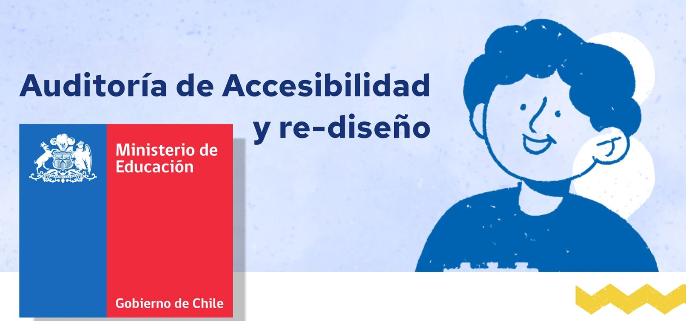

Front-end Developer
Transformo problemas de comunicación digital en sitios web claros, funcionales y alineados con objetivos de negocio
Enfocado en el desarrollo y rediseño de sitios corporativos, abordando cada proyecto desde el análisis del problema para asegurar soluciones coherentes y efectivas.
Ver casos de estudioTrabajos
Casos de estudio
DeSaloon
Sitio web enfocado en la difusión de una gira nacional y acceso a información de eventos

Arthyum
Rediseño de e-commerce enfocado en mejorar navegación y presentación de obras

Proyecto 5
Caso de estudio enfocado en mejora de experiencia de usuario

Accesibilidad
Rediseño de interfaz basado en criterios de accesibilidad y jerarquía de contenido
Quién soy
Sobre mí
Soy desarrollador front-end especializado en sitios corporativos. Me enfoco en analizar productos digitales existentes y proponer mejoras en su estructura, navegación y experiencia de usuario.
Trabajo a partir del análisis de problemas en la comunicación digital, identificando oportunidades de mejora en la forma en que la información es presentada y comprendida por el usuario.
Las decisiones de diseño y desarrollo se basan en criterios de usabilidad, accesibilidad y objetivos del proyecto, priorizando soluciones funcionales por sobre decisiones estéticas arbitrarias.
Proceso
Enfoque de trabajo
Mi proceso se basa en comprender el problema antes de proponer soluciones, abordando cada proyecto desde el análisis, la estructura y la implementación técnica.
- Levantamiento de requerimientos
- Análisis del problema
- Definición de estructura
- Prototipado
- Desarrollo
- Evaluación y ajustes
Stack
Habilidades
- Figma (diseño y prototipado)
- HTML / CSS (estructura y estilos)
- JavaScript (interactividad)
- Sass (organización de estilos)
- WordPress (implementación CMS)
Hablemos
Contacto
Disponible para oportunidades laborales y proyectos digitales. Interesado en integrarme a equipos donde pueda aportar desde el análisis y desarrollo de soluciones.